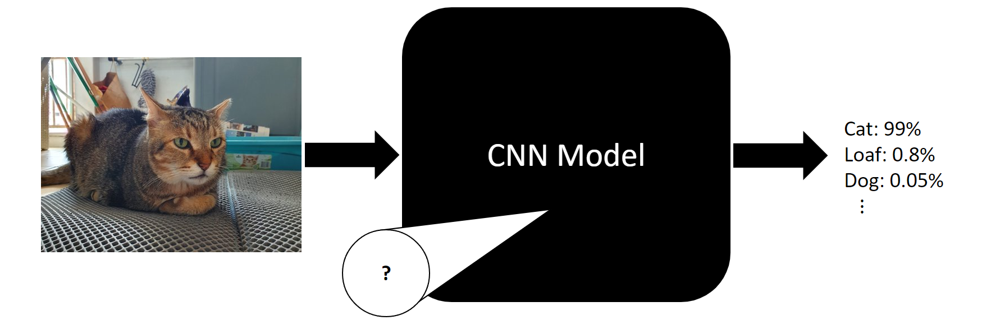

Explainability of CNN model
As mentioned previously, based on the features that have been extracted by the convolutional layers, classification of the image will then take place accordingly.
We call this as having certain highly activated feature maps that correspond to that particular class.
What does that mean?
These feature maps are learned by the model during training, and each map is supposed to extract a certain feature given the input image. There are many feature maps found at each convolutional layer, and this is dependent on the configuration of the CNN model.
For example, we would expect that an image of a building with vaulted ceilings would have highly activated feature maps corresponding to the arched structures.

However, the feature maps at the earlier layers may not have such detailed and elaborate features. Instead, the feature maps present at the earlier layers may serve to only extract very simple features such as vertical lines, for example.
In implementation, how a CNN works seems to be a black box, with very little true understanding of how the model does what it does. However, by understanding how the feature maps work and visualising them, we can actually break down the inner workings of the CNN, giving us explainability of the model.
Why do we need explainability of CNN models?
The explainability of CNN models in this case is provided by visualising the feature maps of the model.
By knowing and seeing which feature maps are activated by a certain image, we can check to see if the model is picking up the correct features, such as in the arched structures example above. If a model is picking up the wrong features, we have an indication that the accuracy of the model may be low.
How can we understand feature maps?
For us to better understand feature maps and visualise the patterns that significantly activates one, we could:
- Look for specific images which result in a high mean actviation of that particular feature map
- Generate a pattern by optimising pixel values such that a specific feature map is highly activated
Let's visualise some feature maps!
We shall now generate patterns for various feature maps throughout the convolutional layers of the model, from the earlier layers all the way to the last convolutional layer.


Notice how some patterns progress deeper into the model?
As we go into the deeper convolutional layers of the model, we can see that the feature maps progress from being simple patterns such as lines, to more complex patterns like shapes, all the way until the patterns seem to resemble recognisable images.
Quiz time!
Let us try to interpret some feature visualisations, and confirm our interpretations.

1. Click on the image that you think corresponds to the feature map above.
 Not quite! The patterns in the feature map seem more reminiscent of a bird with a sharp beak, whereas the dog in this image has a more rounded dog snout.
Not quite! The patterns in the feature map seem more reminiscent of a bird with a sharp beak, whereas the dog in this image has a more rounded dog snout.
That's right! See the slight resemblance to chicken heads in the feature map?
 Not quite! The bear in this image has a bear snout, which does not really match the sharp triangular shapes the feature map is looking for.
Not quite! The bear in this image has a bear snout, which does not really match the sharp triangular shapes the feature map is looking for.
2. Click on the image that you think corresponds to the feature map above.
Hmm, the hexagonal patterns seem to remind me of the panels on a football.
Hmm, the hexagonal patterns seem to remind me of the panels on a football.
Correct, see the hexagonal structures in the feature map?
How does this help us?
What we have learnt is that by visualising some of the feature maps, we can make out certain distinct patterns which the model is using for classification.
However, we must be careful not to generalise too much here. It does not mean that the hexagonal filter is only responsible for detecting soccer balls. This just means that the filter responds to hexagonal structures, which is most probably used for detecting other objects with such a pattern.
Let us try to test the hypothesis!
Now, we will try to visualise the most highly activated feature maps for a given image, essentially showing what features the model detects for a given image.
Click on any of the following images to see what feature maps are activated by the model. You may even be able to recognise some!


Here, we can definitely make out some butterfly patterns from the feature maps, especially the last one.
Most of the feature maps seem to resemble the shape of the wings, or the patterns on the wings.
Here, we can definitely make out some form of circular patterns, as well as something resembling flower petals.


Here, we can distinctly make out the shape of cat's ears in the feature maps.
There also seems to be some form of cat's fur pattern in the last feature map.
What have we learnt?
From the two interactive exercises, we are able to visualise and even recognise some patterns from the feature maps. We are able to relate to how CNNs make use of these patterns to classify images.
However, the patterns present in many other feature maps are not really similar to any pattern that we can recognise. This reinforces that there are still many feature maps which are too abstract for us humans to understand in the same way we recognise patterns. This is merely a way of aiding our understanding of CNN models.